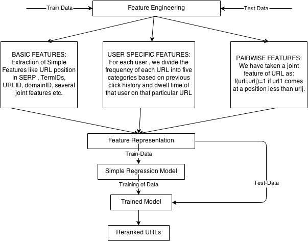

This project is based on the Personalized Web Search Challenge organized by Kaggle. The aim of this challenge is to re-rank URLs of each SERP returned by the search engine according to the personal preferences of the users.
In other words, participants need to personalize search using the long-term (user history based) and short-term (session-based) user context. The evaluation relies on a variant of a dwell-time based model of personal relevance and is data- driven, as it is presently accepted in the state-of the-art research on personalized search.
1. Introduction
As web search is becoming more and more "intelligent", we as users keep asking for more. We expect search engines to know exactly what we mean when we type in a query But as more and more topics are being discussed on the web and our vocabulary remains relatively stable, it is increasingly difficult to let the search engine know what we want. Attempts to solve this problem leads us to user behavior modeling. One aspect of user's behavior that provides especially strong signals for delivering better relevance is an individual's history of queries and clicked documents.
This project provides a rewarding opportunity to consolidate and scrutinize the work from industrial labs on personalizing web search using user logged search behavior context.
To respect the privacy concerns of the search engine users, all of search log data in this dataset has been fully anonymized which has user ids, queries, query terms, urls, url domains, clicks etc.
2. Related Work
For this project we are following the paper written by the winner of this contest. we use logistic regression as a
point-wise model to deal with the huge size of data by taking advantage of its fast training speed. Speed is of utmost essence here because the query log data set becomes huge after we represent it in feature space.
3. Approach
Our approach consists of two main components Feature Engineering and Modeling/Training.
Feature Engineering
The URLs are labeled using 3 grades of relevance: 0 (irrelevant), 1 (relevant), 2 (highly relevant). The labeling is done automatically, based on dwell-time and, hence, user-specific:
0 (irrelevant) grade corresponds to documents with no clicks and clicks with dwell time strictly less than 50 time units.
1 (relevant) grade corresponds to documents with clicks and dwell time between 50 and 399 time units (inclusively).
2 (highly relevant) grade corresponds to the documents with clicks and dwell time not shorter than 400 time units. In addition, the relevance grade of 2 assigned to the documents associated with clicks which are the last actions in the corresponding sessions.
We extract three types of features from the data- Basic features, user-specific features and pair-wise features.
Basic Feature
The basic features are based on a URL-query instance only. These features comprise of the following: result position, unique query ID, query term IDs, list of url IDs, list of domain IDs, joint feature between URL and unique query IDs, joint feature between domainID and its position.
User-specific Feature
Given a URL impression, it is either new or repeated. We split repeated URLs into five groups:
URLs previously displayed and clicked with a dwell time showing a relevance of 2
URLs previously displayed and clicked with a dwell time showing a relevance of 1
URLs previously displayed and clicked with a dwell time showing a relevance of 0
URLs previously displayed but missed. We consider a URL missed when it was not clicked by the user and there were no clicked URLs at lower positions
URLs previously displayed but skipped. We consider a URL missed when it was not clicked by the user but at least one lower ranked URL was clicked.
For each URL, we count the frequency of each type. We then give relative weights to the counts of each of these types and take their sum. This weighted sum is now taken as a feature.
Pari-wise Feature
We propose to make a URL pair as a pair-wise feature for logistic regression. Mathematically, the value of a URL pair is defined as-
f(urli , urlj ) = 0 if urli = urlj = 0 if urli urlj do not occur in a SERP
= 1 if urli < urlj and both occur in a SERP
= -1 if urli > urlj and both occur in a SERP
Modelling and Training
We use logistic regression with implementation of Vowpal Wabbit to predict the probability of a URL to be clicked. This is a project started at Yahoo! Research and continuing at Microsoft Research to design a fast, scalable, useful learning algorithm. VW is the essence of speed in machine learning, able to learn from terafeature datasets with ease. The main advantage of using Vowpal Wabbit over other regression tools us its extra- ordinary training speed. We were able to train 150 GB of data in an hour using Vowpal Wabbit. For training, clicks with non-zero relevance are marked as positive labels. In addition, the sample weight of positive samples is set to be equal to the relevance score, which give more attention to high-relevance clicks. For the learning algorithm, we use the individual learning rates and safe/importance aware updates. To fight against over-fitting, we use L2 regularization. These above configurations can be set by the Vowpal Wabbit's command line arguments, '−adaptive −invariant −l2 0.8e-8'. The parameter '−f' is for train model while '−d' is for input data. The loss function that we use is logistic, for which we include two additional parameters '−loss_function logistic'.
3.1. Assumptions
Following are the assumptions for the input data
Input data file should be in the correct specified format.
Input data should contain only digits and few alphabets like M,Q,C,T only.
3.2. Architecture

Figure 1:Block Diagram showing the basic components of our system
Architecture of the overall project is shown in figure 1, which depicts the flow of data from the input file upto the final output file generated.
3.3. Theory
Since there are roughly one billion samples. Linear models' computation complexity is O(samples). However, tree- based models' complexity isO(samples log(samples)). LambdaMART has been shown to be one of the best algorithms for learning to rank. However, this GBM-like implementation causes difficulties in parallel implementation, it would be time-consuming for LambdaMART to go through all data. Although the point-wise random forest were reported to be competitive in learning to rank in both the 2010 Yahoo! Learning to Rank Challengers and the 2013 Expedia Learning to Rank Challenge, it is still too expensive for our computation resources, a four-core desktop. Of course, we could make a compromise - training a portion of data. However, the advantage of tree-based algorithms would be diminished accordingly. A generalized linear model could be closer to them.
We used a single logistic regression model with implementation of Vowpal Wabbit in this competition. Because the time limit, we did not compare the performance of tree-based models with the similar features but partial training data and was unable to make ensemble models.
4. Evaluation and Results
We evaluated our results on the interface offered by Kaggle Challenge web page from
Here.
The submissions are evaluated using Normalized Discounted Cumulative Gain (NDCG) measure, which will be calculated using the ranking of URLs provided by participants for each query, and then averaged over queries. Mathematically, DCG is defined as a function of a given relevance list as follows-
DCG@10 = Σ i=1 to 10 2reli-1/log2(i+1)
where rel i , i = 1,2, ... 10 is the relevance list that contain 10 URL's relevance values. IDCG@10 is the maximum possible (ideal) DCG for a given set of queries, documents, and relevance value. Then, NDCG@10 is given by
NDCG@10=DCG@10 / IDCG@10
The major results of each single logistic regression model are shown in Table 1. The base line NDCG score is 0.79133 of full test data. We first build a model taking the basic features including the user ID as well as the joint features mentioned before. Along with that we also included all the user specific features, both long term and short terms. This model gives us an NDCG score of 0.6453. Next, we represented the user- specific features differently, we give weights to each type of URLs and then obtain a linear weighted sum,individually for short term and long term. This gives us an NDCG score of 0.756. We then try removing the user ID from the basic features, as this might over-fit the data. This gave a slight improvement in performance, showing an NDCG score of 0.758.
Finally, when our feature list contain basic feature (except the joint features), user based features, pair-wise features and when we consider all the clicked URL's by particular user as relevant to that user then we got .76587
Model
NDCG score
Basic (incl. user ID & joint features) + user- specific features
0.6453
Basic (without joint features but including user ID) + user-specific features
0.756
Basic (without user ID) + user-specific features (10 user-specific features represented as a single feature)
0.758
Basic (without user ID)+ user-specific features(10 user-specificfeatures represented as asingle feature + pair-wise features
0.7518
Basic (without joint features)+ user-specific features + pair-wise features
(when we consider all the clicked url's by a particular user as relevant )
0.76587
5. Conclusion
The problem was challenging because of the huge size of the data and also, more importantly, because of the anonymized nature of the data. We have employed purely statistical methods for feature extraction. Finally we have used Logistic Regression, specifically Vowpal Wabbit for modeling and training, for its unique speed of training. We did not use LambdaMART for training because of limitations of our resources, and also because it is relatively much more time-consuming.
References
Song, Guocong. "Point-Wise Approach for Yandex Personalized Web Search Challenge."
Dou, Zhicheng, Ruihua Song, and Ji-Rong Wen. "A large-scale evaluation and analysis of personalized search strategies." Proceedings of the 16th international conference on World Wide Web. ACM, 2007.
Vowpal Wabbit. http://hunch.net/~vw/.
J. Duchi, E. Hazan, and Y. Singer. Adaptive subgradient methods for online learning and stochastic optimization. The Journal of Machine Learning Research, 999999:2121− 2159, 2011
M. Shokouhi, R. W. White, P. Bennett, and F. Radlinski. Fighting search engine amnesia: reranking repeated results. In Proceedings of the 36th international ACM SIGIR conference on Research and development in information retrieval (SIGIR '13), 2013.
Dou, Zhicheng, Ruihua Song, and Ji-Rong Wen. "A large-scale evaluation and analysis of personalized search strategies." Proceedings of the 16th international conference on World Wide Web. ACM, 2007. URL: http://goo.gl/jpGgqS
Shen, Xuehua, Bin Tan, and ChengXiang Zhai. "Context-sensitive information retrieval using implicit feedback." Proceedings of the 28th annual international ACM SIGIR conference on Research and development in information retrieval. ACM, 2005. URL: http://goo.gl/75VTUnWide Web. ACM, 2007. URL: http://goo.gl/jpGgqS
Bennett, Paul N., et al. "Modeling the impact of short-and long-term behavior on search personalization." Proceedings of the 35th International ACM SIGIR conference on Research and development in information retrieval. ACM, 2012
Volkovs, Maksims N. "Context Models For Web Search Personalization."
Data source: “Personalized Web Search Challenge” URL:https://www.kaggle.com/c/yandex-personalized-web-search-challenge/data